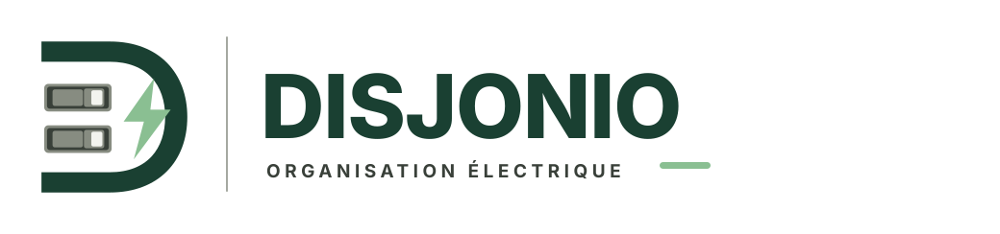
Horizontal · fr · on-light
disjonio-horizontal-fr-on-light.svg23 variantes SVG · FR / EN · palette officielle

disjonio-horizontal-fr-on-light.svg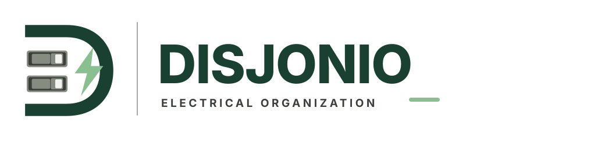
disjonio-horizontal-en-on-light.svg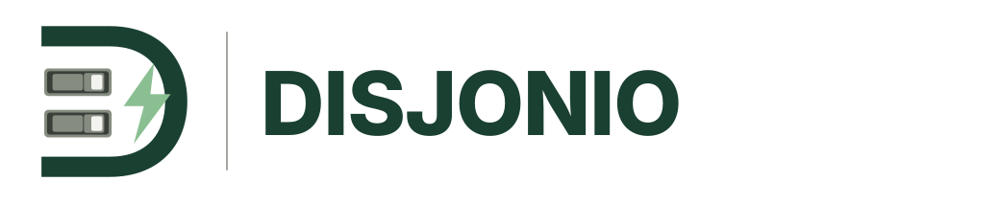
disjonio-horizontal-no-tagline-on-light.svg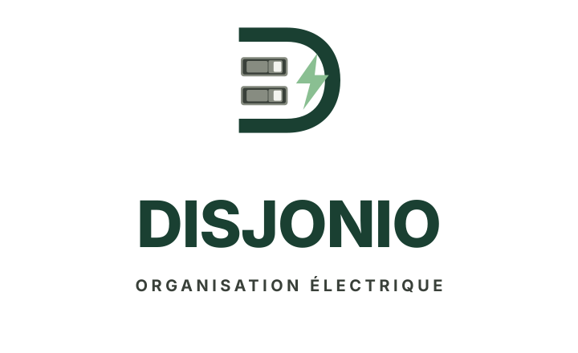
disjonio-stacked-fr-on-light.svg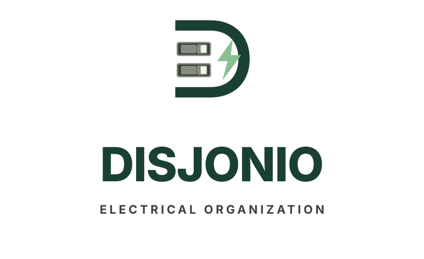
disjonio-stacked-en-on-light.svg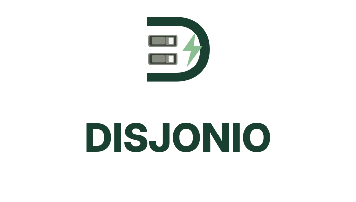
disjonio-stacked-no-tagline-on-light.svg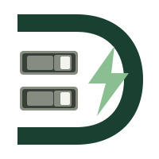
disjonio-symbol-on-light.svg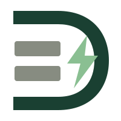
disjonio-symbol-simple-on-light.svg
disjonio-horizontal-fr-on-dark.svg
disjonio-horizontal-en-on-dark.svg
disjonio-horizontal-no-tagline-on-dark.svg
disjonio-stacked-fr-on-dark.svg
disjonio-stacked-en-on-dark.svg
disjonio-stacked-no-tagline-on-dark.svg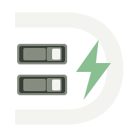
disjonio-symbol-on-dark.svg
disjonio-symbol-simple-on-dark.svg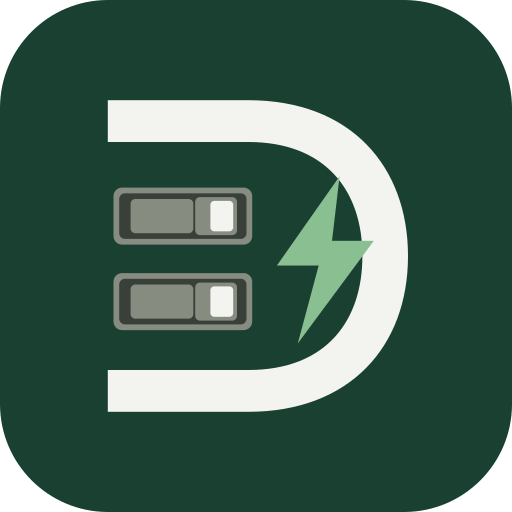
disjonio-app-icon-forest.svg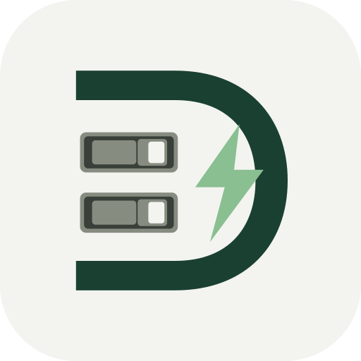
disjonio-app-icon-ivory.svg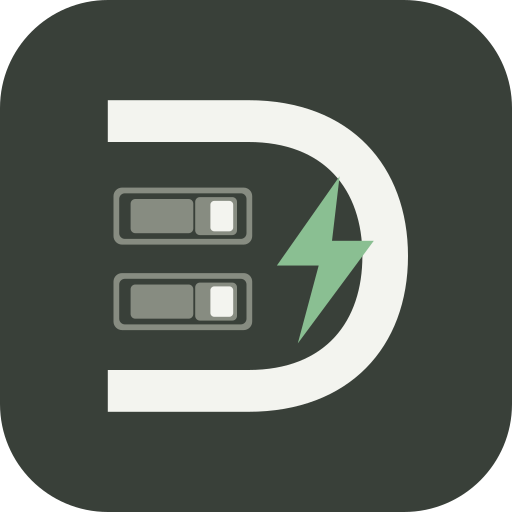
disjonio-app-icon-charcoal.svg